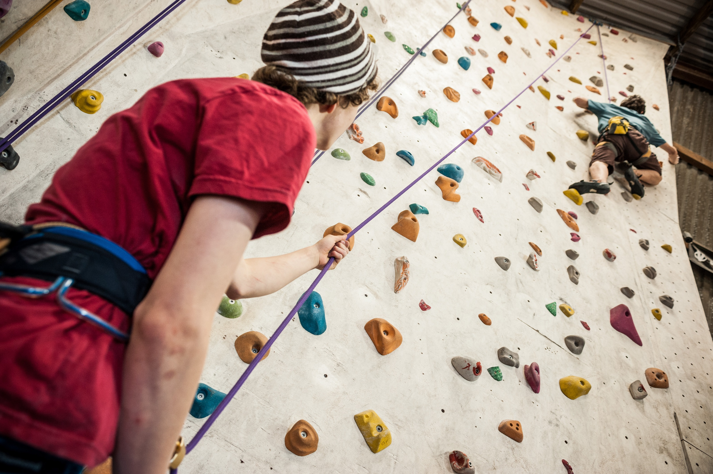
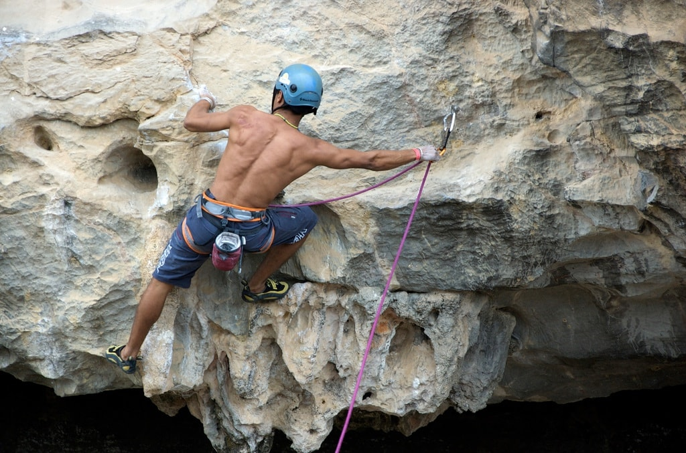

Bouldering

Bouldering is the most simple and the most dangerous form of climbing. Basically all there is to bouldering is finding a relatively small rock and climbing it. The only protective gear used is a crash pad. Because of the lack of protective equipment it is recommended that you always have a spotter with you to guide your fall to the pad. It's not a matter of if you hit the ground. It's a matter of when you hit the ground.
Sport
Sport climbing is the safest form of climbing. It varies from 10 meter climbs all the way up to 60 meter climbs. This requires at minimum; a harness, rope, top anchor, carabiners, and an atc or belay device, and a belayer. Unlike bouldering you can't do this on your own (easily) and it requires someone to actively pull the slack from the rope to keep you safe from falls. This is probably what you think about when you hear rock climbing.
Lead
Lead climbing is the median of dangers in climbing. It is basically more dangerous sport climbing. As you go up the wall you bring the rope with you and clip into bolts as you go. Because of this you need one more piece of gear called quickdraws to connect to them. A helmet and crash pads are also recommended because of the danger of falling before the first clip. Lead climbing can basically be summarized as bouldering up a wall with checkpoints.